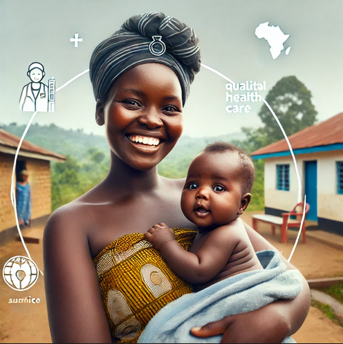

A Call for Action

In many parts of Africa, a simple truth remains heartbreakingly unmet-access to proper healthcare during pregnancy is not a privilege but a fundamental right. Yet, for millions of women across the continent, this right is far from being realized. At AfricaCareLink Foundation, we are dedicated to changing this reality through our maternal health programs, which aim to ensure that no woman faces pregnancy without the medical care she needs. Our programs span across underserved communities, offering vital services such as prenatal checkups, safe delivery practices, and essential postnatal care, all of which contribute to the well-being of mothers and their newborns.
The stakes are high. Every day, nearly 830 women around the world die from preventable causes related to pregnancy and childbirth, with 99% of these deaths occurring in developing countries, particularly in sub-Saharan Africa. At AfricaCareLink Foundation, we believe that no woman should be left behind. Through our programs, we are actively working to reduce maternal and infant mortality rates, one mother at a time.
The Core of Our Work: Providing Lifesaving Healthcare
Our maternal health initiatives go beyond just providing medical care-they are about giving women the support, education, and resources necessary to make informed decisions about their bodies and their futures. Our approach includes:
- Prenatal Checkups: Early detection of potential complications can save lives. Our teams conduct regular prenatal checkups to monitor the health of both mother and baby, ensuring that any risks are identified early.
- Safe Delivery Services: In many rural communities, giving birth is a life-threatening experience due to the lack of trained professionals and sanitary conditions. We provide safe, clean delivery environments with trained midwives and medical staff on hand to assist.
- Postnatal Care: Our support doesn't end once the baby is born. We offer comprehensive postnatal care to ensure both mother and child are healthy and thriving. This includes immunizations, nutritional guidance, and monitoring for any post-birth complications.
- Health Education:Knowledge is power, and through our health education sessions, we empower women with the information they need to make informed choices about family planning, nutrition, and hygiene. This, in turn, has a ripple effect, fostering healthier communities as these women pass on their knowledge to their children and families.
The Impact: Real Lives Transformed
Our programs have already made a significant difference in the lives of thousands of women and children. One such story is that of Amina, a mother of two from rural Uganda. When she became pregnant with her third child, she feared for her life-her last delivery had nearly cost her her life due to complications. But through our maternal health program, Amina received regular prenatal checkups and delivered her baby in a safe, sterile environment. Today, both she and her baby are thriving.

Amina and her baby, thriving thanks to access to
quality maternal healthcare through our programs. Every life
we touch is a story of hope and transformation. This is just
one of many stories that highlight how access to quality maternal
care can mean the difference between life and death.
How Sponsors Can Help: A Call for Urgent Action
However, the work is far from over. Thousands of women across Africa continue to face pregnancy without access to proper medical care, putting their lives and the lives of their children at risk. This is where you, as a potential sponsor, can step in and help us expand our reach.
To maintain and grow our programs, we require ongoing support. Here's how your contributions can make a tangible difference:
- $50 Donation: Provides a complete prenatal care package for one mother, ensuring regular health checks and monitoring throughout her pregnancy.
- $100 Donation: Covers the cost of a safe delivery, including the presence of trained healthcare professionals, sanitary equipment, and postnatal care.
- $250 Donation: Empowers an entire community by funding a health education session, where women learn about family planning, nutrition, and other essential aspects of maternal care.
- $500 Donation:Funds the purchase of medical equipment, such as delivery beds, ultrasound machines, and emergency supplies for one clinic, ensuring that mothers have access to modern medical technology during childbirth.
- $1,000 Donation: Supports the training of new midwives and healthcare workers in rural areas, increasing our capacity to provide life-saving care in remote regions.
Your donation, regardless of the amount, will directly contribute to saving lives and building healthier communities across Africa. We aim to raise $500,000 over the next year to expand our services into five new regions, reaching an additional 50,000 women.
The Power of Collective Action: Join Us
The maternal health crisis in Africa is not just a medical issue-it is a human rights issue. No woman should have to face the risk of death or disability simply because she is pregnant. At AfricaCareLink Foundation, we believe that by working together, we can turn the tide and create a brighter future for women and children across the continent.
But we cannot do it alone. We need the support of compassionate individuals, organizations, and businesses to help fund these life-saving initiatives. Whether it's through financial donations, volunteering, or raising awareness, every action counts.
Projecting Hope: The Path Forward
Our long-term goal is to create a network of maternal health clinics across Africa that provide not only medical care but also education and support to the women who need it most. We envision a future where every mother, regardless of her location or economic status, can give birth safely and watch her child grow up in good health.
With your help, we can bring that vision to life. Together, we can reduce maternal mortality, promote women's health, and build a healthier, more resilient Africa. Please join us in this life-saving mission and make a donation today.
Donate Now to Save Lives. Let's make maternal health care a reality for all women in Africa, because every mother deserves a chance to thrive.